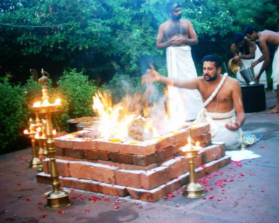

Ganga & Krishnamurthy Temple
Special Mobile Temple
Virtual & In Your Home Services

Non-Profit Donation tax
deductible
Non-Profit Donation tax
deductible
PRIESTS Wanted for New SPECIAL MOBILE TEMPLE
Homa [Fire service]. Photo Shatha Chandi Homa at Kalikamba Temple, Sri Sringeri Sharada Peetha, 30 Dec 2020. Source Wikipedia
Images in this page used only for illustration purpose.
Bengali. Priests conduct their daily aarti to the Ganga river in North Kolkata, offering lights,
incense and other offerings typical of a Hindu puja ritual (often done to anthropomorphic statues). This is a new practice,
based on the famous daily aarti to the Ganga in Varanasi. In the background, a container ship recalls the more profane uses
of the river. Date 5 Mar 2015. Photo Edeyrn87. Wiki.
Bengali. Priest performs Shivapuja, worship of Shiva in his linga form, in a village temple in West Bengal.
2002. Author Christina Kundu.
English. Satguru Sivaya Subramuniyaswami (Gurudeva) at a Homa fire in Kadavul Temple, Kauai,
Hawaii. Date before 2001. Source Himalayan Academy Publications, Kapaa, Kauai, Hawaii.
Author Unknown. Wiki.
Gujarati. Laghu Rudrayag Yagna at Shri Nathjidada Ni Jagya – Danidhar (Taluka Kalavad, Dist. Jamanagar, Gujarat, India).
13 Sep 2009. Author User:જીતેન્દ્રસિંહ
Hindi. A pooja, prayer in progress on the banks of river Ganga. India. 4 Feb 2013.
Photo Seba Della y Sole Bossio. Wiki.
Kannada. Hindu priest in Bull Temple, Karnataka. He is placing long garlands of freshly picked flowers
on the head of this massive statue of Shiva’s bull Nandi, carved out of a single rock.
10 Mar 2006. Source Flickr. Author Ramon.
Kannada. Devarasamaradhane Homa, Yajna oblations ritual. 24 Feb 2011. Author Onkar Hoysala.

Malayalam. Nambudiri Priest performing Homa [Fire service]. Photo Srkris Wikipedia
Tamil. A Brahmana in Tamil Nadu performing a ritual (Homa). 23 Jan 2006. Author Abdullah Al Ameriki on Flickr.
Licensed as CC-BY on Flickr.
Tamil. Smartha brahmana doing Shiva worship in 1900. From a book by
EDGAR THURSTON, C.I.E., published from Madras in 1909.
Interesting image. Brahmanas 1913. Photo Wikipedia
Interesting info. Image Title: Kurma (Tortoise). The figure here indicated by the fingers represent
the tortoise. Creator: Lithographer Day & Son & Artist Mrs. Belnos, S. C. The Sundhya or the Daily Prayers of the
Brahmanas. Illustrated in a series of original drawings from nature, demonstrating their attitudes & different signs &
figures performed by them during the Ceremonies of their Morning Devotions, Poojas, etc. Stephen A. Schwarzman
Building / Asian and Middle Eastern Division. Digital ID: 481288. Date 1851.
Interesting info. Jaipur City Palace. Gangajal [Holy Ganga River Water] in rear in two giant urns. 1 Sep 2007. Author Vinayaraj.
Diwan-i-Khas. City Palace, Jaipur. On display in the right and left porticos are two huge silver urns,
the largest in the world according to the Guiness Book of Records. Maharaja Madho Singh II filled these urns with Ganga water
and took them with him to England, when he attended the coronation of King Edward VII in 1901. - G41rn8.